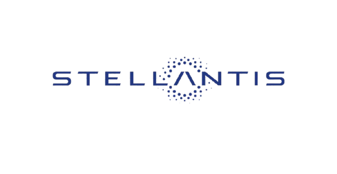
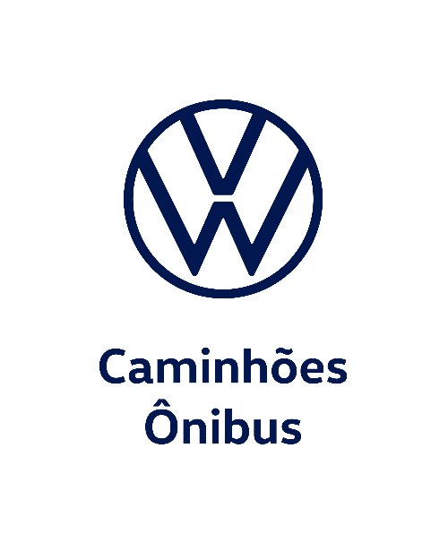
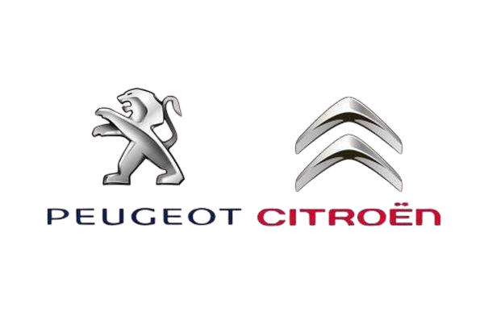
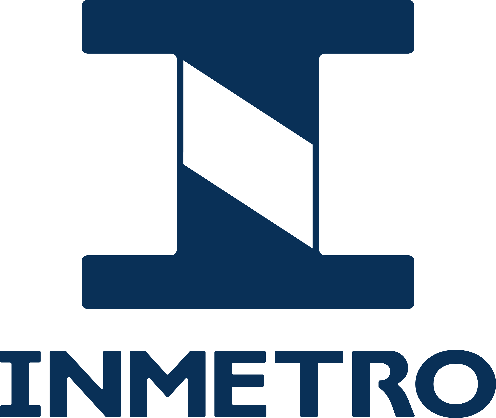

Resultados
Entregas técnico-científicas e de inovação direcionadas à indústria automotiva.
Empresas e Instituições Parceiras





Equipe Executora
Dr. Ivanovitch Medeiros Dantas da Silva
Coordenador GeralDr. Carlos Manuel Dias Viegas
Coordenador AssociadoDra. Marianne Batista Diniz da Silva
Pesquisadora AssociadaMorsinaldo de Azevedo Medeiros
PesquisadorThaís de Araújo de Medeiros
PesquisadoraMiguel Euripedes Nogueira do Amaral
PesquisadorHilton Thallyson Vieira Machado
PesquisadorAlan Vicente Amorim da Silva
PesquisadorErick Vinicius Justino da Silva
PesquisadorTomaz Filgueira Nunes
PesquisadorMaria Eduarda Lima da Luz
PesquisadorAlice Maria Fonseca Victorino Freire
PesquisadorMatheus Gomes Diniz Andrade
AlumniGisliany Lillian Alves de Oliveira
AlumniThommas kevin Sales Flores
AlumniDr. Juan Moises Mauricio Villanueva
Coordenador AssociadoMateus de Sousa
PesquisadorJosé Hélio Bento da Silva
PesquisadorBárbara Geovanna Alves Cavalcante
PesquisadoraLudmila Vinólia Guimarães Gomes
PesquisadoraIguatemi Eduardo da Fonseca
Colaborador ExternoEuler Cassio Tavares de Macedo
Colaborador ExternoVinicio de Araujo Matos
Colaborador ExternoRomulo Navega Vieira
Colaborador ExternoLuiza Benevides Martins Cavalcanti de Albuquerque
Colaboradora ExternaPatricio Valentin Casquero Camara
Colaborador ExternoBruno Ribeiro de Brito Rafael
AlumniMarcelo Ferreira Teixeira
AlumniDr. Wilson de Souza Melo Junior
Coordenador AssociadoDr. Rodrigo Pereira David
Pesquisador AssociadoDr. João Alfredo Cal Braz
Pesquisador AssociadoLuciano Araujo Dourado Filho
PesquisadorPaulo Roberto de Mesquisa Nascimento
PesquisadorVictor Daniel Silva Souza
PesquisadorDaniel Marques da Silva
PesquisadorDr. Davidson Rodrigo Boccardo
PesquisadorAgda Beatriz Gonçalves Costa
PesquisadoraDr. Luan Michel Soares Pereira
PesquisadorDavi de Souza Feliz
PesquisadorAndré Ribeiro Vieira
AlumniErick Andrade Borba
ColaboradorEduardo Valente Martins
AlumniMalkai Pereira Oliveira
ColaboradorMarcus Vinicius Moreira
AlumniPaulo Eduardo Santos
ColaboradorRayssa Gabryelle Gomes Alves
ColaboradorStephanie Souza Silva
ColaboradorDr. Valter Silva Ferreira Filho
Volkswagen Truck & BusMsc. Samantha Uehara
Volkswagen do BrasilMsc. Daniel Giacometti
Embeddo Computação AplicadaMsc. Fernando Nogueira Villela
Stellantis N.V.Perguntas Frequentes
Dúvidas comuns sobre o projeto Descarbonize.ai
Criar um sistema de conectividade veicular focado na descarbonização e monitoramento ambiental, priorizando o monitoramento de variáveis para tráfego inteligente e a geração de créditos de carbono.
Os dados coletados via Freematics OBD-II são tratados e processados utilizando uma arquitetura robusta, que permite medições precisas da eficiência energética de cada veículo.
Utilizamos a tecnologia blockchain para registrar as emissões garantindo segurança e transparência. Ela sustenta um serviço de monetização, permitindo que a redução de emissões gere créditos de carbono às montadoras e proprietários de veículos.
A geração dos créditos de carbono utiliza um modelo econômico baseado em metas de emissões (em gramas de carbono por quilômetro) definidas conforme o modelo do veículo. Sempre que uma viagem é feita de modo a gerar menos emissões que o esperado, o responsável pelo veículo recebe essa diferença em créditos, que são registrados como um ativo não fungível (NFT) na plataforma blockchain, e precificados pelo valor corrente do grama de carbono com base em índices de mercado.
A plataforma blockchain desenvolvida passou por um processo formal de modelagem de ameaças e identificação de riscos e vulnerabilidades, sendo então implementados mecanismos específicos para garantir a segurança e privacidade dos usuários.
Nossa equipe desenvolveu modelos de IA específicos para correlacionar dados de uso de veículos de propulsão interna (VPIs) e VPAs com características físicas semelhantes em condições de uso equivalentes. Uma vez treinados, esses modelos conseguem avaliar dados de VPAs e estimar diretamente a eficiência energética e emissões de forma comparativa a outros veículos.